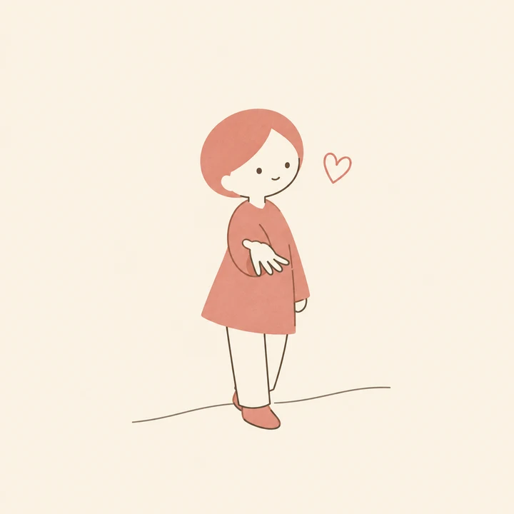
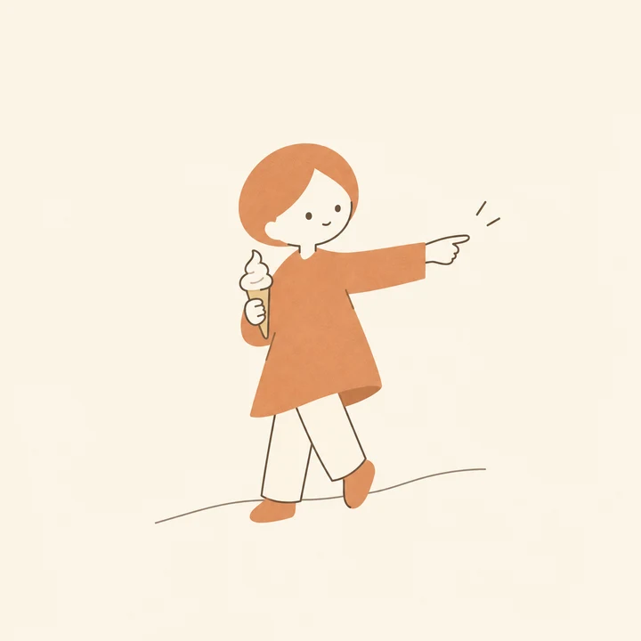
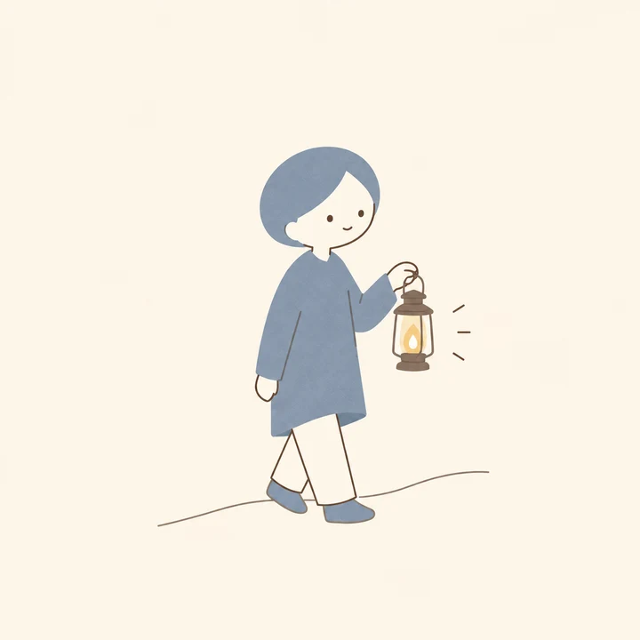
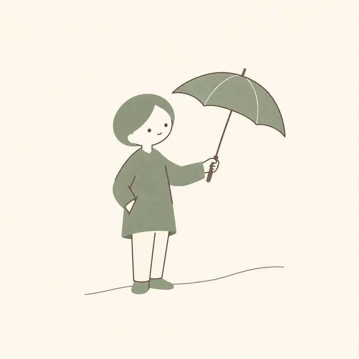
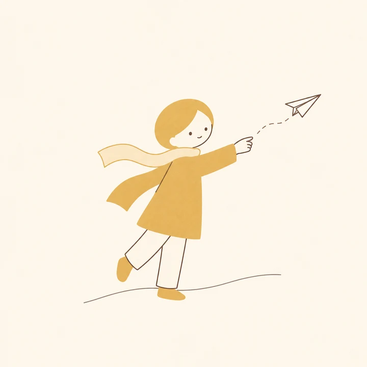
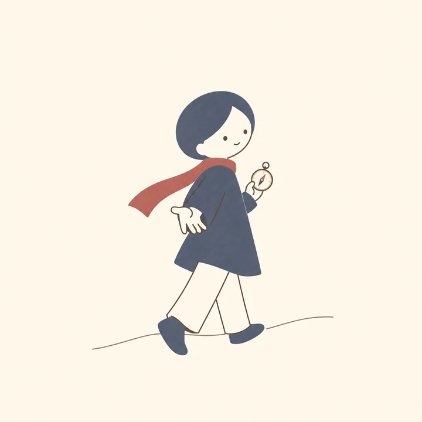
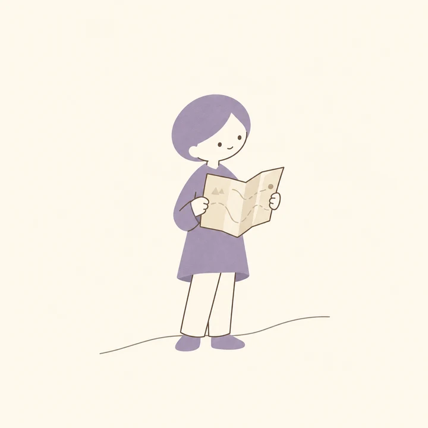
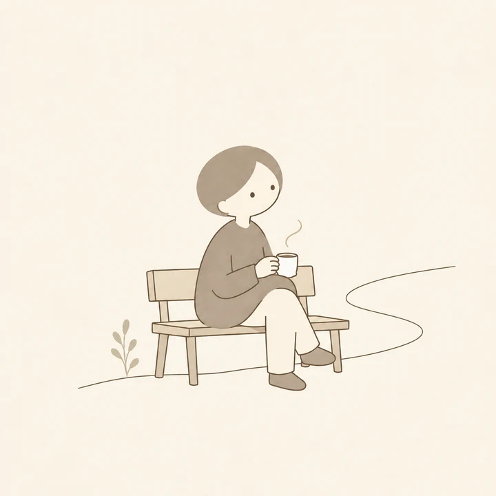

TSUKISOI COMPATIBILITY TEST
16タイプ × あなたの恋愛パターンで、
「合う理由」から探す結婚相談所。








WHY
年収・年齢・写真。プロフィールで比べるほど、決め手は消えていきます。
OUR ANSWER
ツキソイは、条件の前に「一緒にいて疲れない相手か」を見ます。3つの視点を掛け合わせて、あなたに合う理由を言葉にします。
情報の受け取り方、決め方、エネルギーの向き。会話が噛み合うかどうかの土台。
ツキソイ独自の診断で、恋愛での「クセ」を8つのパターンに分類します。
結婚後の毎日を左右する「歩幅」。近い人ほど、長く一緒に歩けます。
HOW IT WORKS
知らない方は4問の目安判定があります。
恋愛での距離感・決め方・愛情表現・生活設計を見ます。
あなたのパターンと、相性の良い3タイプ。詳しいレポートはLINEで受け取れます。
回答内容はこの端末の中だけで処理され、送信されません。
8 PATTERNS
距離感・決め方・愛情表現の組み合わせで決まります。タップすると詳しく見られます。
COMPATIBILITY
寄り添いたい人と、自分の時間を大事にしたい人。この差は、恋愛で最もすれ違いを生みます。だからツキソイでは、まず距離感の近い人を「相性が良い」とします。
言葉が少ない人は冷めているのではなく、行動で示している最中。先に決めたがる人は束縛ではなく、安心がほしいだけ。翻訳のコツがわかれば、すれ違いは減らせます。
MATCHING
住む場所、子ども、仕事の継続。ここが合わない人は最初から外します。
距離感と歩幅は近い人を。決め方と愛情表現は、補い合える組み合わせも提案します。
「なぜこの人か」「気をつける点」「初デートの話題」を1枚の相性レポートにしてお渡しします。
WITH YOU
「ツキソイ」という名前は「付き添い」から。診断はきっかけ。その先の交際期間も、担当プランナーが翻訳役として隣に立ちます。「彼が黙るのは怒りではなく処理中」— そんな一言が、関係を続けさせます。
FIRST TALK
無料のオンライン相談。カメラオフOK、入会の勧誘はしません。診断結果を持ってきてもらえれば、その場で相性の読み方を一緒に見ていきます。
FAQ
占いではありません。恋愛での傾向を言葉にして、相手と話し合うための「共通言語」です。結果は固定ではなく、状況によって変わることもあります。
診断の最初に4問の目安判定があります。おおよそのタイプで大丈夫です。
回答はこの端末の中で処理され、サーバーには送信されません。LINEで合言葉を送っていただいた場合のみ、パターン名がツキソイに伝わります。
もちろんです。相談や入会は、結果を見てから決めてください。
診断・LINEのレポート・初回相談はすべて無料です。
START